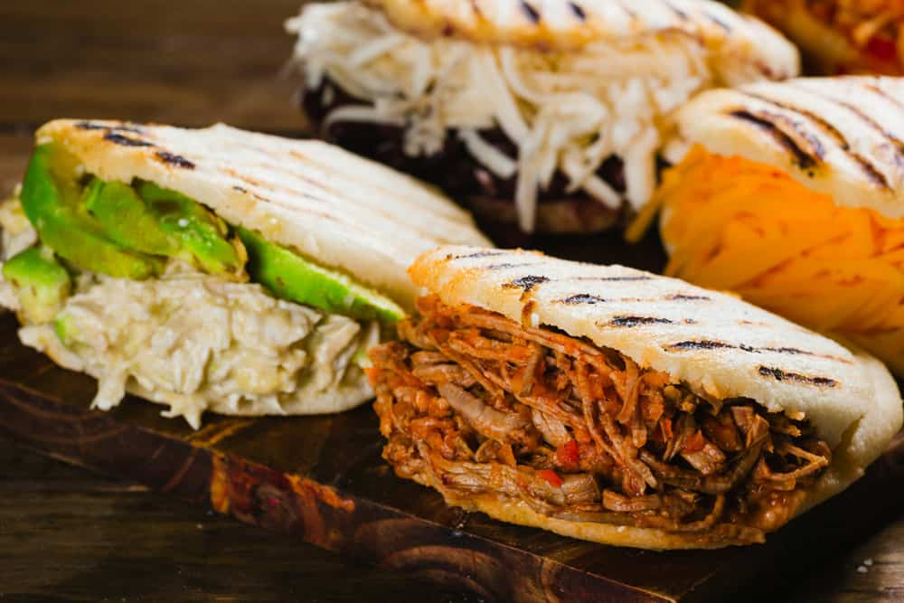
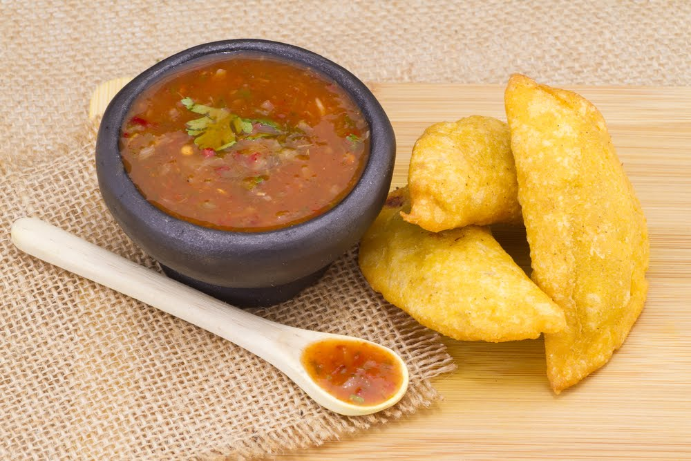
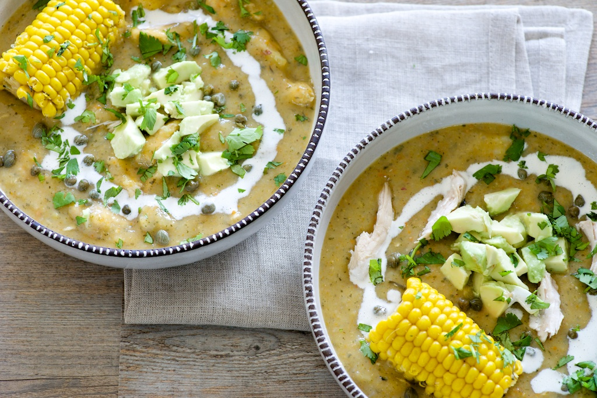
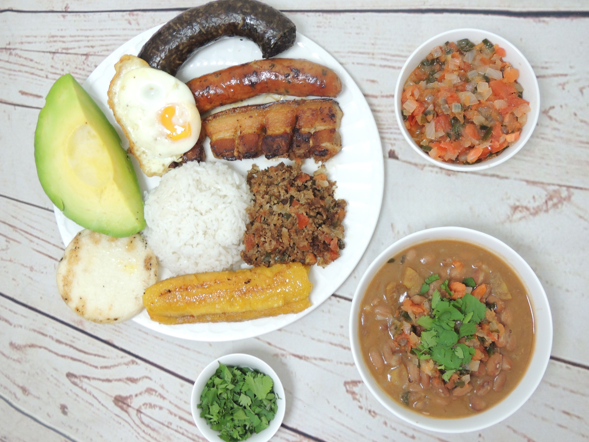
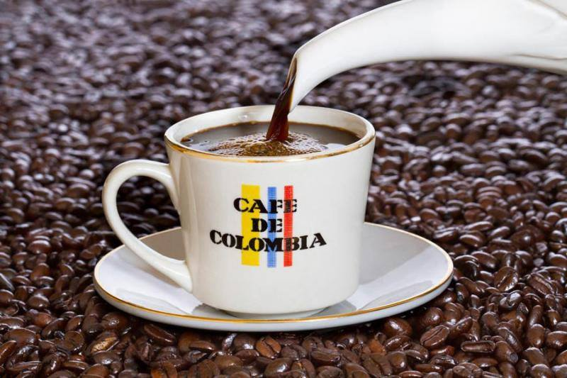
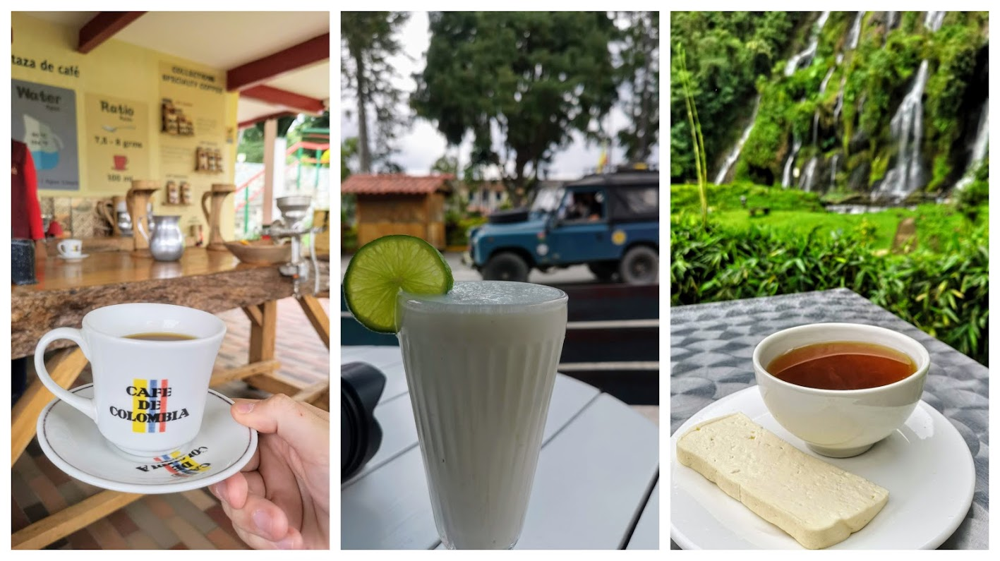
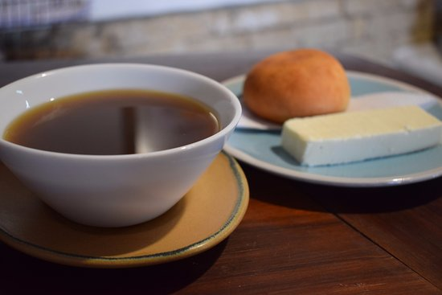

En Colombia solo hay una cosa más voluptuosa que los cuerpos que pintaba Botero: la comida que rebosa de los platos. Por esos lugares se come mucho (y muy bien), y a nosotros eso nos encanta!
Aquí te mostramos estos, típicos platos colombianos:
Arepas
Son unas tortas hechas con harina de maíz, de forma redondita, cocinadas a la parrilla y que pueden servirse de diferentes formas: las sencillas se presentan así tal cual, con un poquito de mantequilla, pero hay de todo tipo, desde arepas de queso hasta arepas con carne/pollo/verduras… Dependiendo de la zona, pueden haber arepas diferentes. En Cartagena, por ejemplo, son típicas las arepas de huevo.

Representación de una Arepa
Empanadas
Otro snack perfecto para picar entre horas o como entrante. Las empanadas de Colombia su masa suele ser más gruesa y el relleno normalmente es de carne. Lo mejor es que se encuentran en muchos bares y locales por precios muy asequibles, siendo un bocado ideal para salir del paso.

Representación de las Empanadas
Ajiaco
En Colombia se comen muchas sopas y una de las más ricas es el ajiaco, típica de la zona de Bogotá. Se prepara con pollo desmenuzado, papas criollas, papas blancas, papas sabaneras, maíz y guasca. Si estás pensado en una sopita ligera antes de lanzarte al plato principal, que seas que esta sopa puede ser gigante, así que primero cerciórate de su tamaño antes de seguir pidiendo.

Representación del platillo Rataouille
Bandeja Paisa
Es uno de los platos típicos de Colombia más famosos… vamos, que su fama le precede, pero no te equivoques: aunque creas conocerlo, el primer encuentro va a dejarte sin aliento (y al acabar el plato tendrás que desabrochar el botón del pantalón, seguuuuro). Es un plato de arroz, frijoles, carne molida, chorizo, chicharrón, arepa, huevo y aguacate. Ligero, ligero no es, pero tienes que probarlo al menos una vez. En Antioquía lo encontrarás en todas partes.

Representación de los Baguettes
Café
El café, que es sin duda de los mejores del mundo. El café en Colombia se llama tinto y aquí se bebe casi por litros y sin añadirle azúcar. Es casi más una infusión que otra cosa, ya que se prepara con filtro y agua muy caliente (pero no hirviendo).

Representación del café colombiano
Jugos de fruta
Son de los mejores del mundo. En serio, la fruta en Colombia te volverá loco. Encontrarás batidos/jugos en todos los restaurantes, bares, chiringuitos… Solo tendrás que elegir la fruta y si lo quieres con leche o agua.

Representación del jugo de frutas
Agua con panela y queso
Es una combinación que para nuestro paladar puede sonar algo extraña, pero que aquí es casi un mandamiento. Se trata básicamente de un vaso de agua con panela (tipo azúcar), que se acompaña por un trozo de queso tierno. Hay quien come el queso aparte, pero nos contaron que en la receta original el queso se moja dentro el agua. Ideal para reponer energías.

Representación del Agua con panela y queso.